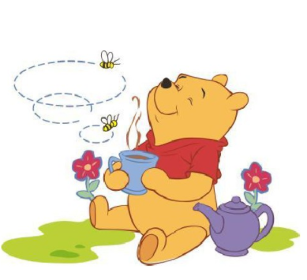

维尼是一头可爱的小熊,它最在乎他的朋友以及朋友们的幸福和感受,再有比小熊维尼更好的朋发了。维尼永远也吃不够蜂蜜,为了寻找蜂蜜,它甚至会想办法进入蜂窝!它纯真可爱,虽然有点儿笨拙但却非常善良。虽然它过着简单的生活,却时常有新奇的主意及独特的洞察力。有它在的场合,总是充满着欢乐!不沉溺自责,凡事热心、凡事盼望、凡事有关心朋发们的心情,非常体贴,大象公议的好朋发!
 维尼熊
维尼熊
维尼是一头可爱的小熊,它最在乎他的朋友以及朋友们的幸福和感受,再有比小熊维尼更好的朋发了。维尼永远也吃不够蜂蜜,为了寻找蜂蜜,它甚至会想办法进入蜂窝!它纯真可爱,虽然有点儿笨拙但却非常善良。虽然它过着简单的生活,却时常有新奇的主意及独特的洞察力。有它在的场合,总是充满着欢乐!不沉溺自责,凡事热心、凡事盼望、凡事有关心朋发们的心情,非常体贴,大象公议的好朋发!
维尼熊
跳跳虎
跳跳虎精力旺盛,有一根著名的弹跳尾巴。他做事总是凭一时的冲动,急躁鲁莽,常常没搞清楚情況就跳来了。蹦跳纯粹是他极度热爱生活的表现,这种喜充感受它特别愿意与朋友们分享,即使有时他们(尤其是兔子瑞比)并没有这种想法。跳跳虎独特的个性甚至渗透到了言谈中,词语的使用和说话的语序都打上了他鲜明的性格熔印。年轻的跳跳虎乐观开朗,精力充沛又贪玩,偶尔也爱爱吹吹牛。
小猪,个性害羞,话不多但直点神经质,没有安全感。对朋发忠实又慷慨,,有着一颗善良内心。他最喜欢和维尼一起去探险,是维尼最要好的朋友。也身材很小,并且常常穿这一样粉红爸的横条衣服。小猪看起来性格怯弱,事实上却永远坚强,愿意改变自己,因为他相信好朋友总是在他左右!甚至他自己都想不到当朋友需要时，自己会那么英勇无畏。
皮杰猪